MyCA: books the owner never has to learn.
A Windows workbench for the firm, a phone app for the owner. The tax invoice is the source of truth: GST returns and the trial balance are projections of posted invoices.
Today: the owner flow end to end, where a CA stays in control,
and what we will not claim.
Sales, bills and expenses with the taxes handled.
- No accounting software to learn: the owner talks, the app keeps the books.
- Nothing moves without approval of exactly what goes out.
- Numbers come from engines, never from a model: the model may choose a tool, a deterministic engine computes.
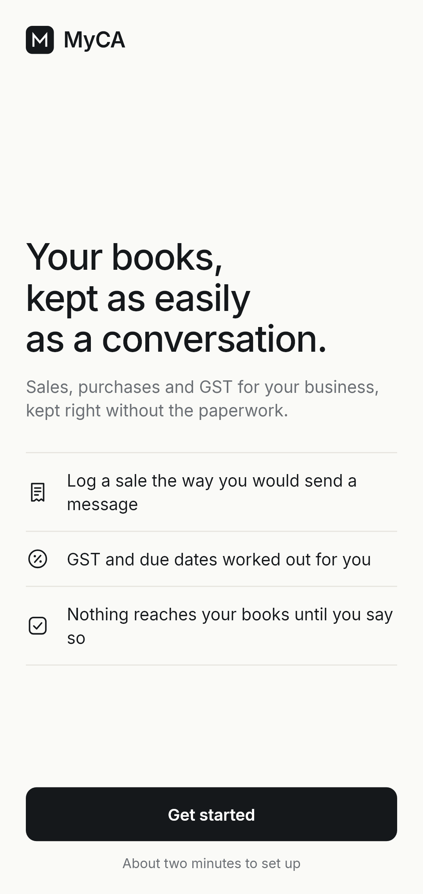
The phone holds no tax logic.
- Forms send structured arguments to /api/propose; the engine returns the preview plus a one-use token.
- Confirming the token posts; discarding voids it. Nothing posts silently.
- Append-only ledger, integer paise, every transfer debit-equals-credit. Every figure traces to a posted invoice.
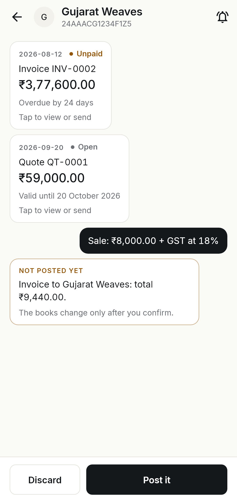
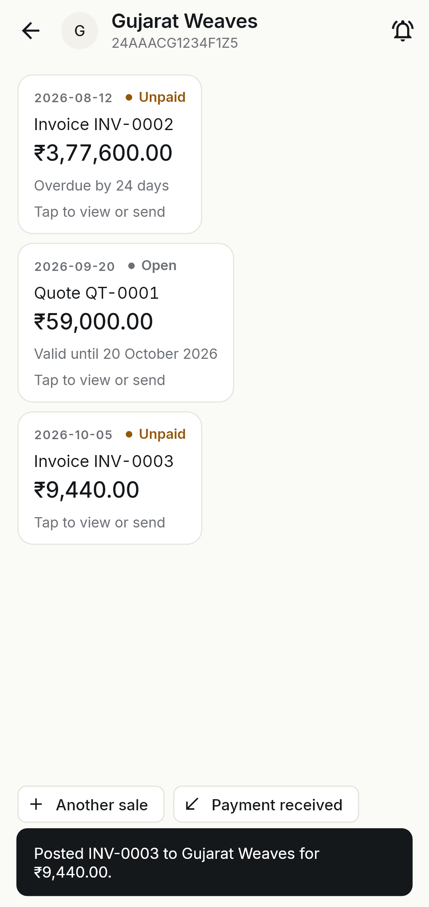
One entry in, three projections out.
1 · Capture
Phone thread, Tally / Zoho / bank file, or chat line
2 · Propose
Structured args to /api/propose; engine preview + one-use token
3 · Confirm
Post it or Discard; receipts, expenses, credit notes alike
4 · Ledger
Append-only paise journal; trial balance always ties
5 · Review
GSTR-1 / 3B, 2B match, deadlines, ITR, TDS, audit
6 · File
On the portal or with the CA; ARN recorded back
Where are your books?
- Each path offers only what the server can parse: Day Book CSV, TallyPrime XML, Zoho invoice CSV, bank statement.
- Vyapar, Khatabook, Busy and Marg have no direct import: the screen says so before a file is picked.
- Files upload first; imports refer to them by hash, never by pasted contents.
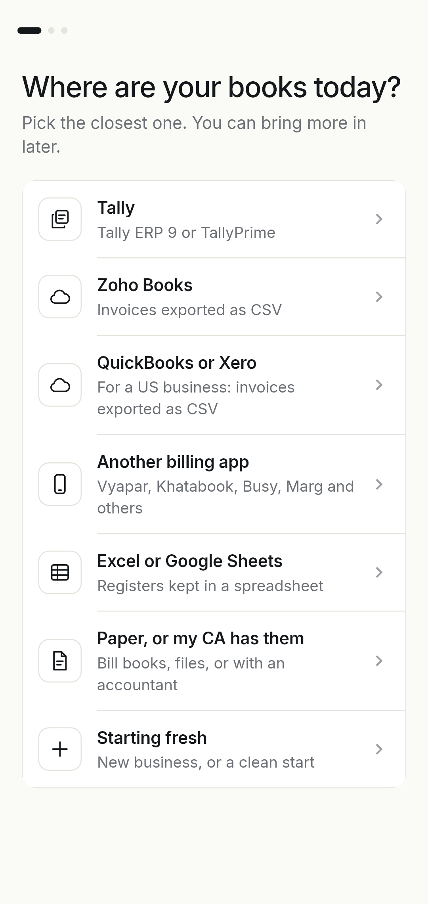

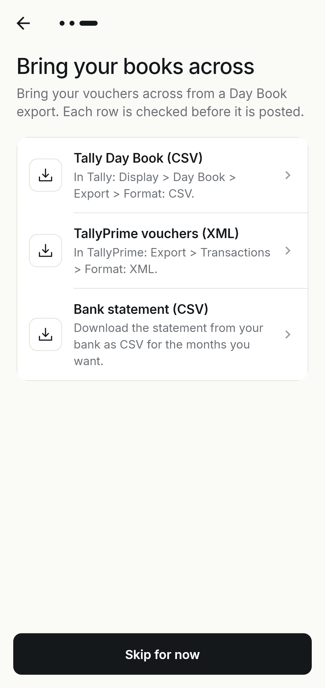
What needs you, worked out from your books.
- Taxes and filings panel, books-today counter, week ahead, due-today reminders.
- Month summary with prior-period compare, all server-computed.
- Tap the phone for the first-day empty state; Back returns here.
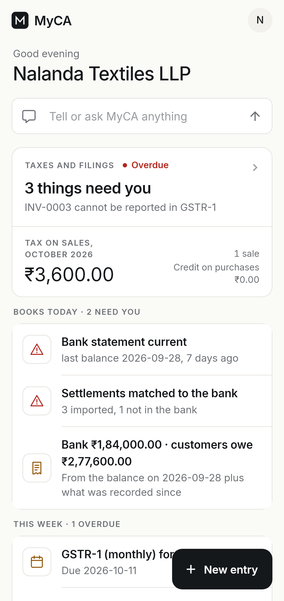
One thumb from thought to invoice.
- Five-way New entry sheet from the home button.
- Party picker ranks live threads with balances; typing filters, new customers inline.
- Sale form sends date, amount, rate chip, place of supply: the engine splits the GST.
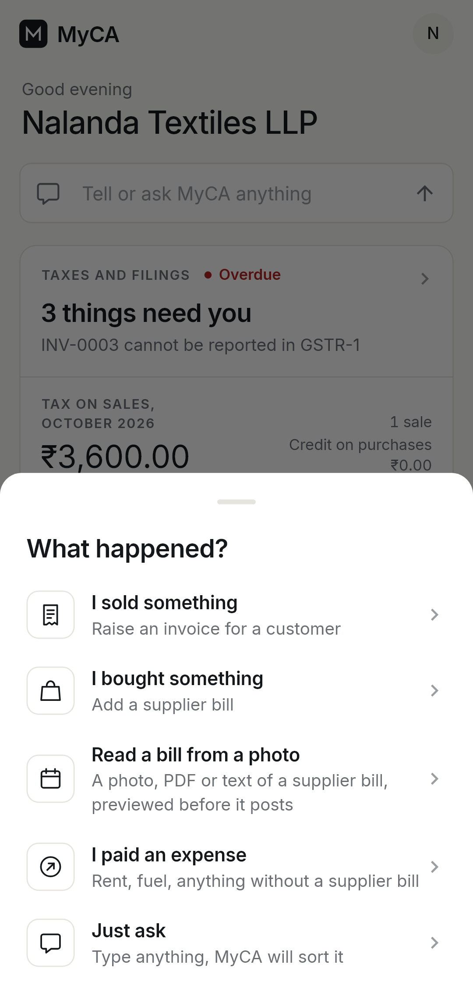
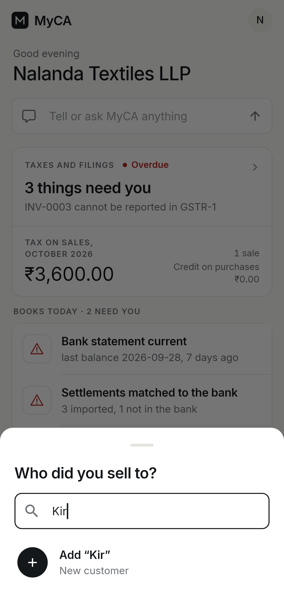
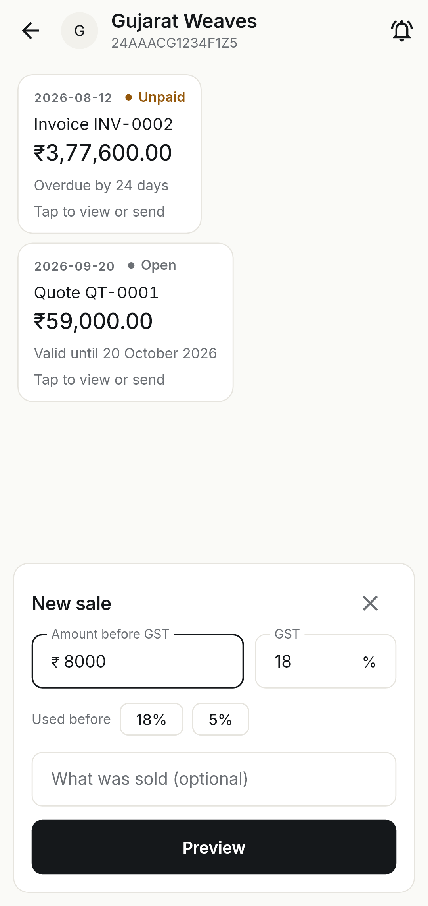
Preview first. Post only on approval.
- The gold NOT POSTED YET card states the exact entry: nothing hidden, nothing implied.
- Post it assigns the invoice id; Discard voids the token.
- Registers refresh from the server snapshot, never from local guesses.
One customer, one thread.
- Balance owed, quotes and invoices in one scrollable relationship.
- Invoice detail: HSN warning, e-way bill card above fifty thousand interstate.
- Share goes through the owner's own WhatsApp or email: MyCA sends nothing itself.
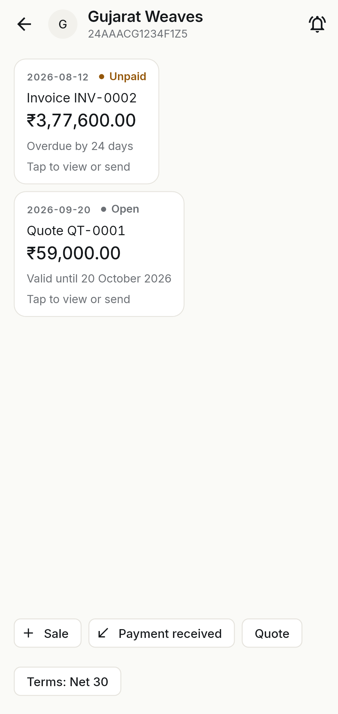
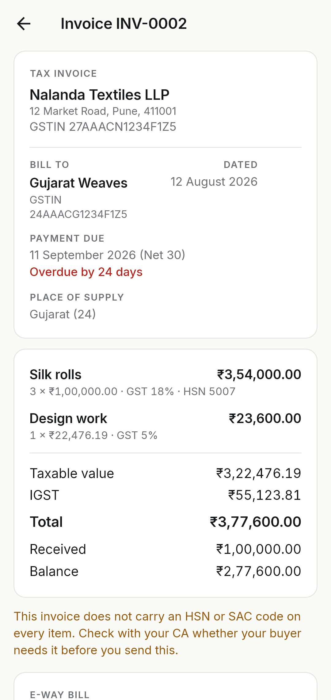
Same contract, smaller amounts.
- Heads with month spend and bill counts; one-tap New expense.
- Expense versus Asset is an explicit choice that changes posting.
- Cash versus bank is explicit at entry; preview and post as usual.
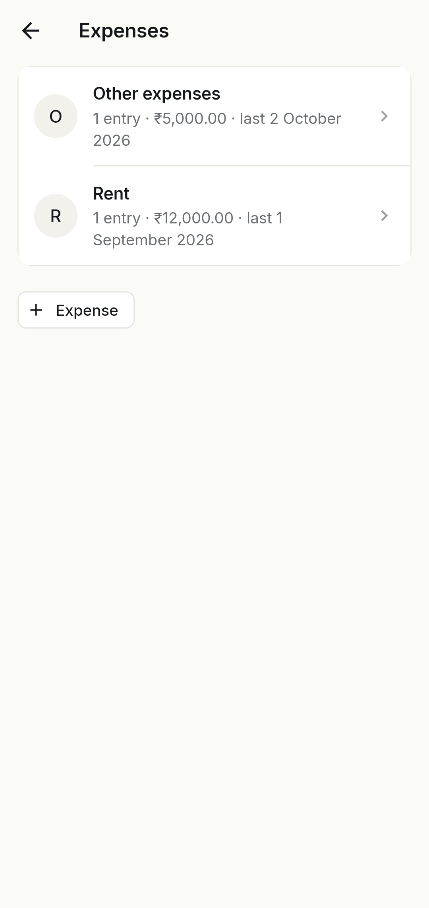
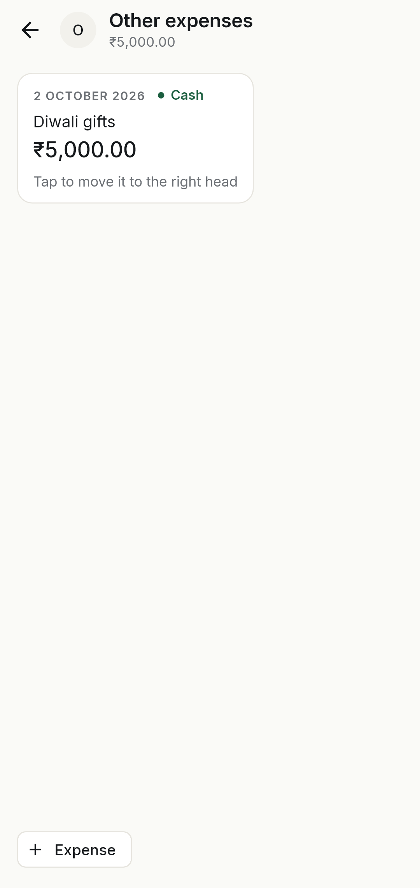
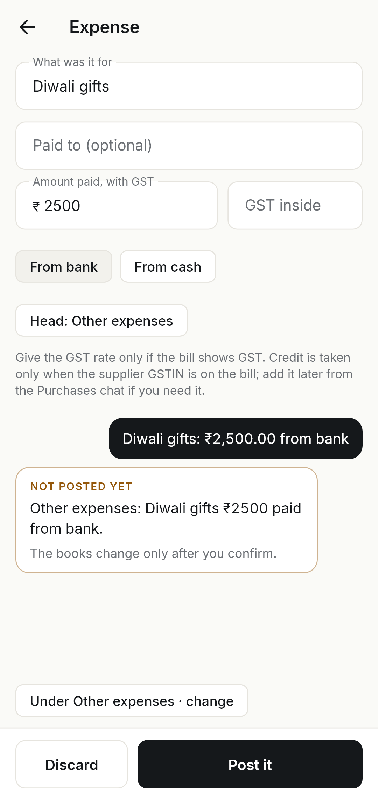
Corrections are new entries, never edits.
- Partial or whole credit note against the invoice, capped including GST.
- Reason is mandatory: design work not done is on the record.
- The invoice is never rewritten; the ledger stays append-only.
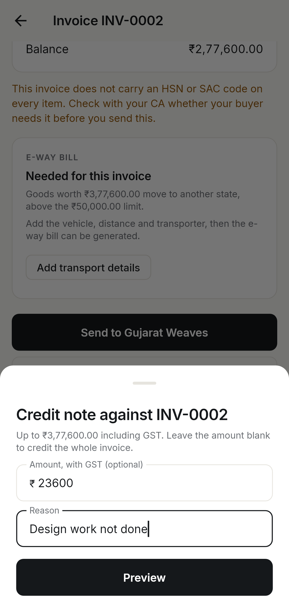

Review step by step. File elsewhere.
- Return hub: GSTR-2B import banner, review CTA, exports pack, TDS section.
- Maker-checker: sales, then purchases, then Approve; the reviewer is recorded.
- MyCA does not work out the amount to pay and does not file; the ARN is recorded back.
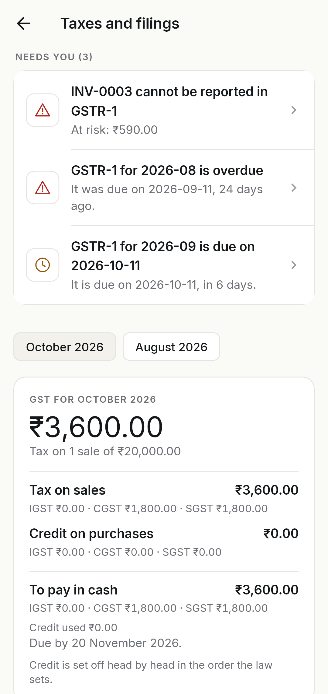
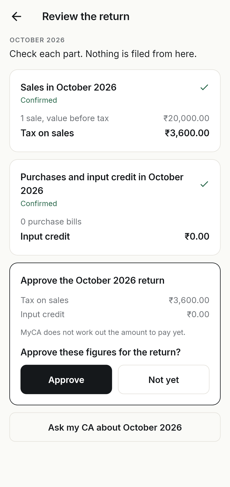
The books check themselves in public.
- Books check: blocking issues, money states, and the invariant that every entry has a matching debit and credit.
- Cash: stated balance plus movement, dated 30-day projection, overdue excluded with the reason stated.
- Quotes post nothing; making the invoice posts, with the same lines.
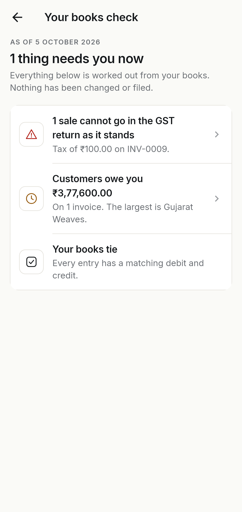
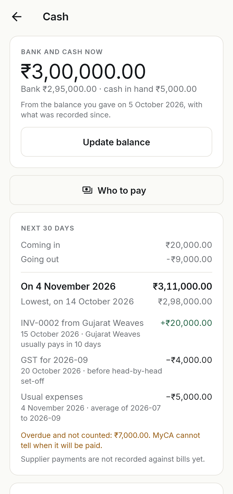
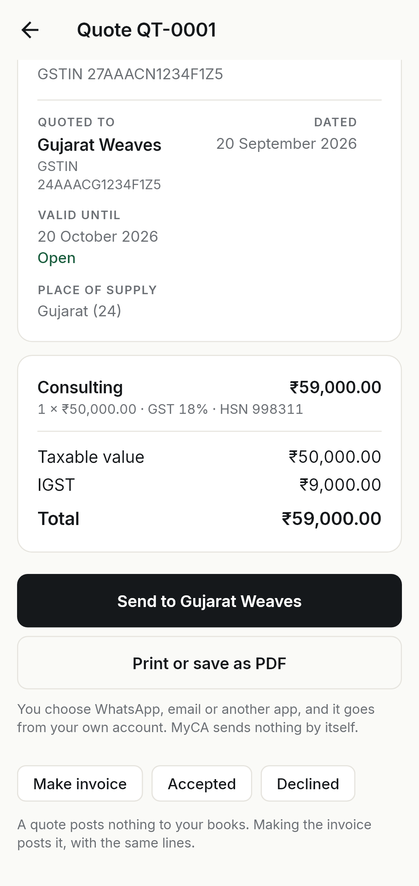
The firm reviews where the books live.
- Same engine, loopback only: Vouchers folio, Books tie-out, GST workspace from the same posted invoices.
- Control tabs: approvals with maker-checker, period lock, audit log, firm outbox, Govt NIC steps.
- Print: invoice PDF through a narrow bridge; WhatsApp and email share from this PC.
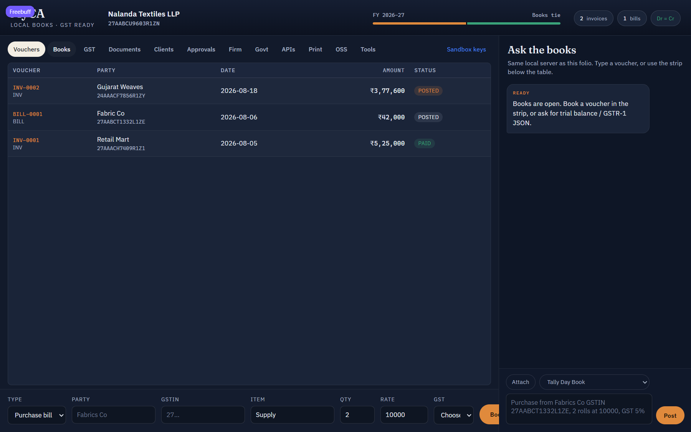
Every outside call passes four gates.
Hosted API
One transaction per request, one locked books row per business. Google and OIDC sign-in, sealed connector credentials, nightly pulls behind a read-only switch.
Provider adapters
Sandbox by Quicko and NIC IRP translate into MyCA engines. Wired in TEST, verified live in sandbox; production needs onboarding and real keys.
Connectors
Plaid, Gusto, TaxJar, Track1099 plus Amazon, Shopify, Razorpay, Zoho as gated pulls with preview and confirm. Nothing files silently.
What would stop you trusting this with a client?
Built, tested, green.
- Platform 682 of 682, engines 330 of 330, Android 166 widget tests, CI green.
- 71 named tools with strict schemas; unsafe ones blocked from the assistant.
- What stays manual: attesting, signing, filing. That is your signature, not ours.